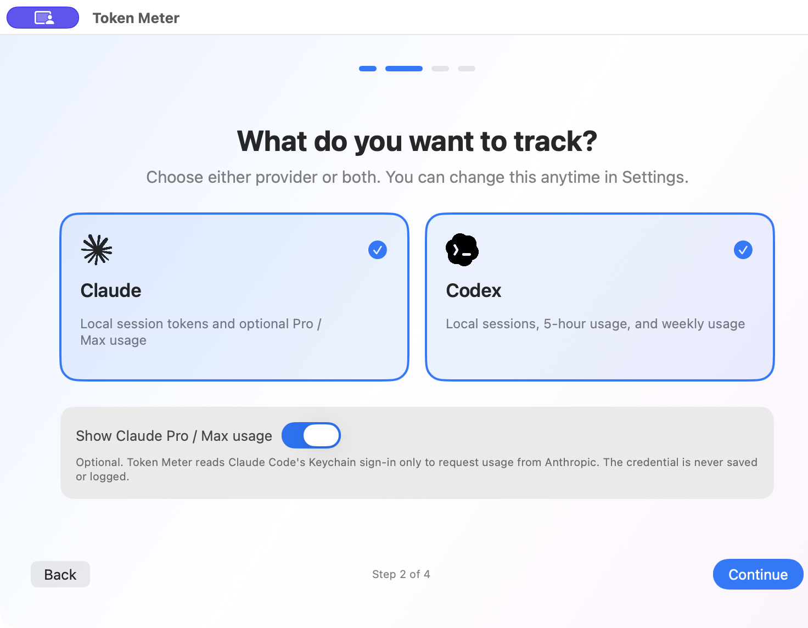
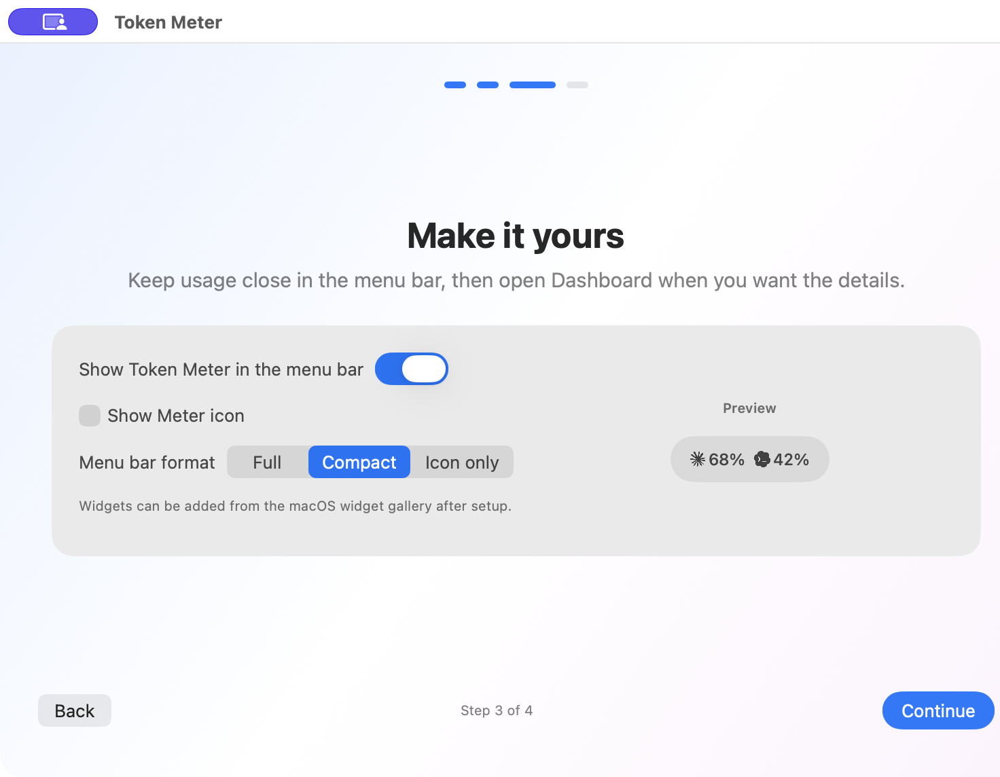
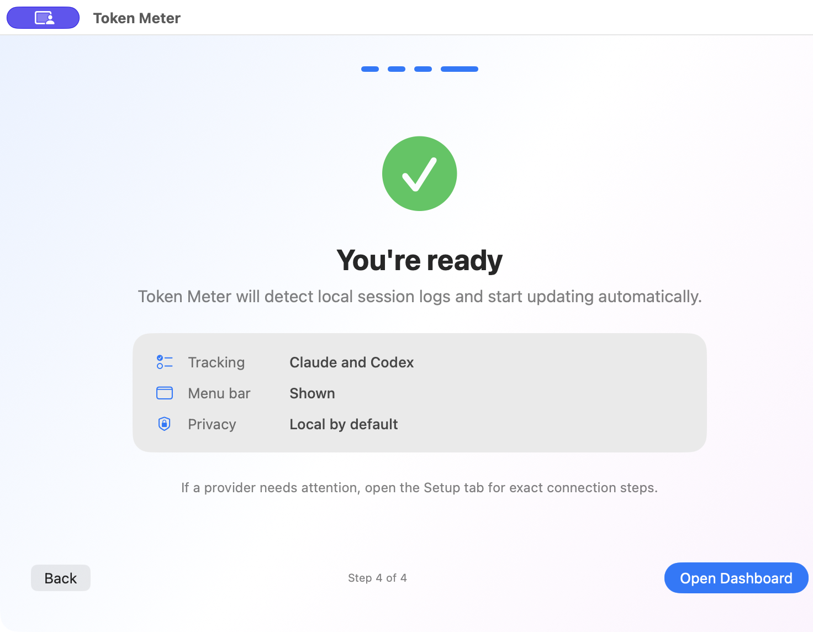

01
3つのAIを、同じ場所で。
Claude CodeとCodexを並べて表示。GitHub Copilot CLIにも対応します（トークン数のみの集計、デフォルトはオフ）。使うプロバイダーだけを選べます。

macOS メニューバーユーティリティ
Claude CodeとCodexの利用状況を、
作業を止めずに確認。
ひと目で確認
メニューバーでは残量をすばやく確認。詳しく見たいときはダッシュボードとウィジェットから、5時間枠、週次枠、今日のトークン数を追えます。ダッシュボードは最長90日間の推移と、前日・前7日・前30日・前90日との比較にも対応します。
ドラッグまたはスワイプで切り替え
01
Claude CodeとCodexを並べて表示。GitHub Copilot CLIにも対応します（トークン数のみの集計、デフォルトはオフ）。使うプロバイダーだけを選べます。

02
Full、Compact、Icon onlyから選択。残量は5時間枠を基本に、週次枠へ切り替えられます。5時間枠が提供されていない場合は週次枠を自動表示します。

初期設定からプライバシー重視
ローカルのセッションログから、トークン数・日時・モデル名だけを集計します。プロンプト本文や応答本文、認証情報は保存しません。
Claude Pro / Maxの残量確認は任意です。有効にした場合のみ、Claude Codeのサインイン情報を使ってAnthropicの使用量エンドポイントへ問い合わせます。
プライバシーポリシーを読むセットアップ
初期設定では、選んだプロバイダーの使用量を実際に読み取れるかまで確認します。読み取れない場合は、未ログインやセッションログ未作成など、直すべき点を具体的に表示。今は設定を終えて、あとから接続しても構いません。
Claude Codeのサインインとキーチェーン許可を手動で行う
ダウンロード
ZIPを展開し、Token Meter.appをアプリケーションフォルダへ移動してください。